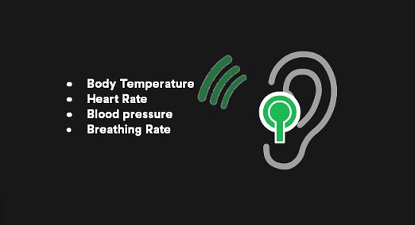

Spotify.Me2
According to Vice president Babar Zafar of Spotify’s Product Development, Spotify aims to not only “… [give] users a more customized free experience from the day they sign up, but [give] them more control over their listening experience…”
The Spotify.Me2 is a system that aims to address the goals of “giving users a more customized free experience” and “more control over their listening experience”.
The Spotify.Me2 is a pair of earphones embedded with temperature, heart rate, blood pressure and breathing rate sensors that connects with your smartphone via Bluetooth which then accesses the Spotify servers. The sensors collect data then uploads it to Spotify which processes it through machine learning to better understand the music taste of users. It will allow users more customizability and control over their listening experience through the mapping of their personal physical data to their emotional responses, preferences and behaviors. This could then be used to predict what users want through a learning feedback loop as larger databases about the users are built. The target goal is an experience where users don’t need to know what they want, to receive the music they desire. This complementary system would allow users to control their musical experience on Spotify with the unique Spotify.Me2’s feedback system.
The current music market is saturated to the point where aspiring artists upload their music for free to platforms like SoundCloud in hopes that it will pique people’s interests. Most people are afraid of investing their time in artists who they will not like, causing a stagnation of the music industry and a non-intimate musical experience as people flock to the billboards top 50. However, with Spotify.Me2’s machine learning algorithm, we could further understand the types of music that people want and connect them to a wide range of niche genres, diversifying the current musical scene and giving people a more customized free experience.
Through understanding the previously unknown musical preferences of users, Spotify could then sign or collaborate with artists that users subconsciously like (similar to how Netflix produces influential TV series) which could reduce the dependence of Spotify on popular artists and create an irreplaceable user experience.
Spotify coupled with the Spotify.Me2 provides a different dimension for the user to input their opinions into the searching algorithm. With this extra advantage, large amounts of information can be obtained to ensure a smooth entrance into a competitive market. Users will choose Spotify.Me2 over competitors’ services due to the immersive musical experience provided by the bilateral feedback nature of the product, making “music” synonymous to “Spotify”.